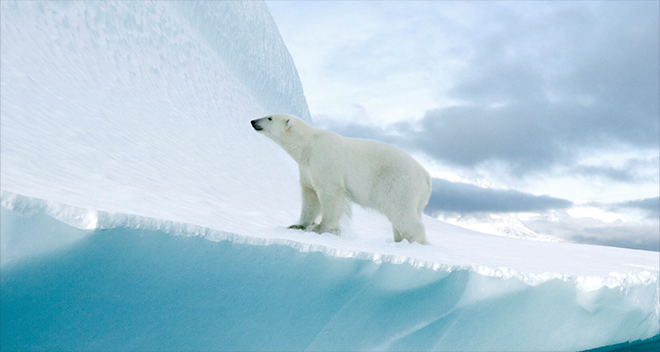

오답입니다!
해마다 북극빙하면적이 감소하고 있습니다.
북극곰을 지키는 후원을 부탁드립니다.
퀴즈참여현황
38,387명 참여
*퀴즈참여현황은 매주 업데이트됩니다
최근 20년 사이 북극의 빙하 면적은 50% 감소하였습니다
북극은 북극곰의 주 서식지이자 사냥터지만
이 순간에도 녹아 내리는 빙하로 인해 북극곰은 갈 곳을 잃었습니다

해마다 북극빙하면적이 감소하고 있습니다.
북극곰을 지키는 후원을 부탁드립니다.
38,387명 참여
*퀴즈참여현황은 매주 업데이트됩니다
북극은 북극곰의 주 서식지이자 사냥터지만
이 순간에도 녹아 내리는 빙하로 인해 북극곰은 갈 곳을 잃었습니다
